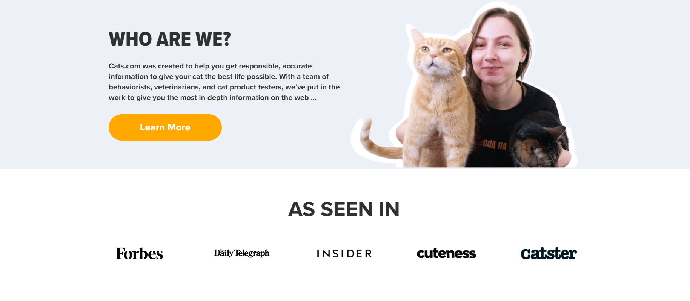

About me
Meow there! I'm Yuki, the purr-fectly adorable cat. I'm a pro at napping, playing with yarn balls, and giving those irresistible "puppy eyes" to get what I want. My pawsome skills include chasing laser pointers, meowing at birds from the window, and making humans smile with my cuteness overload!
I have a black belt in curiosity and I'm always up to some mischief. If you see something broken or knocked off the table, don't blame the dog – it was probably me. But hey, who can resist exploring every nook and cranny?
I'm a natural-born leader and I'm not afraid to show it. I'm always the first to try new things and I'm not afraid to take risks. I'm also very independent and I like to do things my own way.
Skills
- Pro at napping
- Giving those irresistible "puppy eyes" to get what I want.
- Chasing laser pointers
- Meowing at birds from the window
- Making humans smile with my cuteness overload!
Projects
Meow Code

Project Description!
Contact
Let's connect!